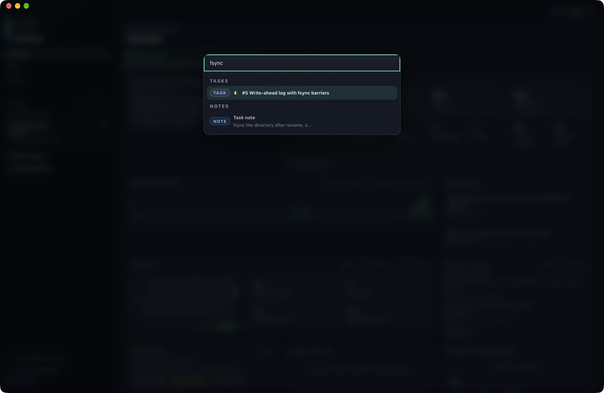
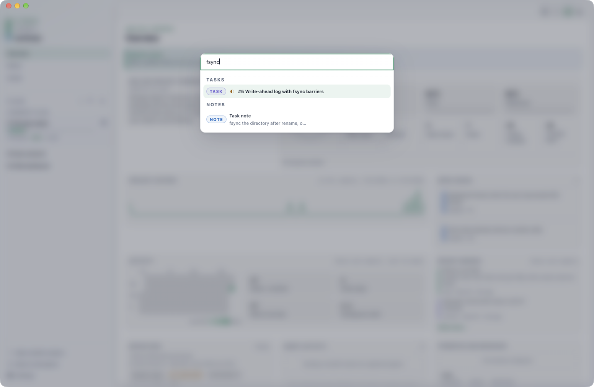

Command and interface reference
CLI, TUI, and command palette
Use this page to find a command family or terminal-interface action. Run ptrack <command> --help, and then the relevant subcommand with --help, for authoritative arguments and flags in your installed version.
CLI commands
| Command | Subcommands or use | Important flags and notes |
|---|---|---|
init | Initialize or refresh a project. | --goal, --root, --force, --no-guide. |
goal | show, set <text…> | Read or replace the north-star goal. |
summary | show, set <text…> | Read or replace the rolling project summary. |
milestone / ms | add, list, show, done, open, due, rename | add --due YYYY-MM-DD; due <id> <YYYY-MM-DD>. |
plan | add, list, show, done, use, rename, hold, resume | add --milestone <id>. use sets the CLI active plan. hold <id> <reason…> pauses a plan; resume <id> clears the hold. |
task | add, list, show, start, done, block, rename, move, convert / promote, hold, resume | add --plan <id>; list --plan <id> --status todo,doing,done,blocked; move <id> --plan <id>; hold <id> <reason…> and resume <id>. |
issue | add, list, show, close, open, severity, rename | add --severity --task --body; list --status open|closed. |
note | add, list | add --plan <id> or --task <id>; list --plan --task --limit. |
commit | add, record, list, show | add --plan --task; record --sha --subject; list --plan --task; show --stat. |
hook | install, uninstall, status | Manage the repository hook integration. |
context | Print a bounded resume digest. | Use at the start of a work session. |
guide | Install or refresh managed agent guidance. | --print writes the guide to standard output instead of files. |
next | Choose the next actionable task in the active plan. | Read-only orientation. |
search <term> | Search project records. | Requires one search term. |
board | Render the board or open its Desktop form. | --plan <id>, --gui. |
gui [PATH] | Open p-track Desktop. | Optional project path. |
status | Show storage and project status. | Read-only. |
projects | List known projects. | Read-only. |
backup | Create a database backup copy. | No restore subcommand is provided. |
capability | call <tool>, mcp | call --arguments '{}'; requires a p-track agent-terminal broker session. |
version | Print the installed version. | No project required. |
A hold is separate from status. plan hold and task hold pause an item with a reason, and resume clears it — as does completing the item, since a done task or a done or archived plan clears its hold automatically. The item keeps its own status, so task list --status still filters on todo, doing, done, and blocked only. Held work is skipped by next, listed separately by context, and marked in every read surface.
JSON output
--json is command-specific, not a global promise. It is documented for only these read commands:
milestone list --json,milestone show <id> --jsonplan list --json,plan show <id> --jsontask list --json,task show <id> --jsonissue list --json,issue show <id> --jsonnote list --json,commit list --jsoncontext --json,next --json,search <term> --jsonboard --json,status --json,projects --json
TUI screens
Running ptrack without a subcommand opens the terminal interface when the desktop-enabled build is used inside a project. Its five screens are 1 Overview, 2 Board, 3 Milestones, 4 Issues, and 5 Maintenance.
| Context | Keys |
|---|---|
| Welcome | Enter/Space/1 Overview; 2–5 other screens; ?/F1 menu; q/Ctrl+C quit. |
| Global | Tab/Shift+Tab cycle; 1–5 jump; ?/F1 menu; g goal; m summary; e rename; Enter details; r reload; B backup; q/Ctrl+C quit. |
| Command menu | ↑/k, ↓/j, Enter; direct keys 1–5, g, m, e, M, P, r, B; ?/F1/Esc close. |
| Detail | ↑/k, ↓/j, PgUp, PgDn/Space; Esc/Enter/Backspace close; r refresh; e rename; M move; P convert. |
| Text input | Enter commit; Esc cancel. |
Screen-specific keys
- Overview: ←/h and →/l switch plan/task pane; ↑/k and ↓/j select; a add; n note; u activate plan; x finish plan; s/d/b start/finish/block task; M move; P convert.
- Board: ←/h and →/l change lane; ↑/k and ↓/j select card; H/< and L/> move status; a task; n note; M move plan; P convert.
- Milestones: ↑/k, ↓/j, a add, x done, o reopen.
- Issues: ↑/k, ↓/j, a add, c close, o reopen.
- Maintenance: uses the global navigation, reload, backup, menu, and quit keys.
Desktop command palette
Open the palette with Cmd+K on macOS or Ctrl+K elsewhere. It is a project search surface, not a command launcher. It performs a case-insensitive substring search over plan titles, task titles, and note bodies in the current workspace, returns at most 50 results, and groups them Plans → Tasks → Notes.
Use ↑/↓ to select, Enter to open, and Esc to close. A plan result opens that plan's Board snapshot. A task result opens its plan's Board and task drawer. A note result opens Overview, where Recent memory is shown.


Keyboard shortcut reference
Desktop, terminal, tab, pane, and native-menu shortcuts are collected on the Keyboard shortcuts page.